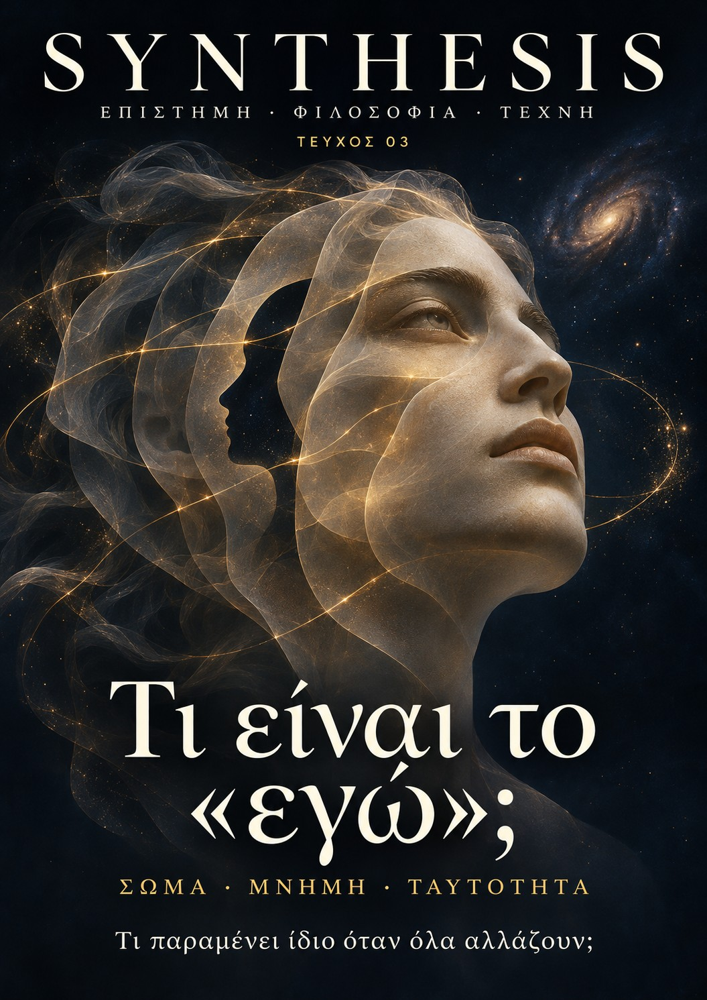

ΤΕΥΧΟΣ 03 / ΝΟΕΜΒΡΙΟΣ 2026
Τι είναι
το «εγώ»;
Τι παραμένει ίδιο όταν όλα αλλάζουν; Από το παιδί της φωτογραφίας στον άνθρωπο που δεν έχεις γίνει ακόμη.
ΣΩΜΑ / ΜΝΗΜΗ / ΤΑΥΤΟΤΗΤΑ

ΕΞΙ ΔΙΑΔΡΟΜΕΣ
Ένας εαυτός.
Πολλές ερωτήσεις.
Σώμα, μνήμη, ταυτότητα. Έξι μεγαλύτερα άρθρα, διαδραστικές στάσεις και μια προσωπική εξερεύνηση του εαυτού που αλλάζει.
Πού τελειώνεις εσύ και αρχίζει ο κόσμος;
Το σώμα δεν είναι απλώς αυτό που βλέπεις στον καθρέφτη. Είναι ο τρόπος με τον οποίο αποκτάς θέση, προοπτική και δυνατότητες μέσα στον κόσμο.
Διάβασε το άρθρο →02 / ΜΝΗΜΗ / ΠΡΟΣΩΠΙΚΗ ΙΣΤΟΡΙΑ · ≈ 7′Είσαι όσα θυμάσαι;
Δεν θυμάσαι τη γέννησή σου. Δεν θυμάσαι κάθε χθεσινή στιγμή. Κι όμως, η ζωή σου δεν αρχίζει εκεί όπου αρχίζει η διαθέσιμη ανάμνηση.
Διάβασε το άρθρο →03 / ΕΓΚΕΦΑΛΟΣ / ΠΡΟΘΕΣΗ · ≈ 7′Ποιος αποφασίζει πριν πεις «εγώ»;
Μια κίνηση αρχίζει να προετοιμάζεται πριν αναφέρεις ότι την αποφάσισες. Από αυτό το εύρημα μέχρι την κατάργηση της ελευθερίας υπάρχει περισσότερος δρόμος απ' όσο χωρά ένας εντυπωσιακός τίτλος.
Διάβασε το άρθρο →04 / ΑΝΑΠΤΥΞΗ / ΣΥΝΕΧΕΙΑ · ≈ 7′Είσαι ακόμη το παιδί της φωτογραφίας;
Από το πρώτο σώμα που δεν θυμάσαι μέχρι τον άνθρωπο που δεν έχεις γίνει ακόμη: μια ζωή αλλάζει χωρίς να χωρίζεται εύκολα σε διαφορετικούς ιδιοκτήτες.
Διάβασε το άρθρο →05 / ΤΕΧΝΗΤΗ ΝΟΗΜΟΣΥΝΗ / ΝΟΗΤΙΚΟ ΠΕΙΡΑΜΑ · ≈ 7′Αν ένα αντίγραφο θυμάται τη ζωή σου, είναι εσύ;
Ένα σύστημα μπορεί να μιλά σαν εσένα. Ένα υποθετικό αντίγραφο μπορεί να γνωρίζει όσα γνωρίζεις. Κανένα από τα δύο δεν απαντά μόνο του στο ποιος θα ανοίξει τα μάτια του αύριο.
Διάβασε το άρθρο →06 / ΤΕΧΝΗ / ΒΛΕΜΜΑ · ≈ 7′Πόσους εαυτούς χωράει ένα πορτρέτο;
Η αυτοπροσωπογραφία διατηρεί ένα πρόσωπο και ταυτόχρονα μια απόφαση: έτσι θέλω, μπορώ ή αντέχω να με δουν αυτή τη στιγμή.
Διάβασε το άρθρο →ΤΟ ΤΕΥΧΟΣ ΩΣ ΕΚΔΟΣΗ
Κράτησε τη διαδρομή.
PDF 1.0 / 67 σελίδες / 11.11.2026ΝΟΗΤΙΚΟ ΠΕΙΡΑΜΑ / ΜΙΑ ΠΡΩΤΗ ΣΤΑΣΗ
ΟΠΤΙΚΗ ΣΤΑΣΗ / ΕΞΕΡΕΥΝΗΣΗ
Άλλαξε τις υποθέσεις
Νοητικό πείραμα. Δεν περιγράφει διαθέσιμη τεχνολογία ούτε δίνει επιστημονική ετυμηγορία για τη μεταφορά ενός προσώπου.
EDITORIAL
Το παιδί που δεν χάθηκε
Σε μια παλιά φωτογραφία, ένα παιδί κοιτάζει τον φακό. Δεν θυμάσαι τη στιγμή. Ίσως δεν αναγνωρίζεις ούτε το δωμάτιο. Αναγνωρίζεις όμως το παιδί: «Εγώ είμαι».
Η πρόταση φαίνεται απλή μέχρι να σταθείς λίγο περισσότερο. Το σώμα είναι μικρότερο, οι κινήσεις διαφορετικές, ο κόσμος γεμάτος πράγματα που δεν έχουν ακόμη ονόματα. Εκείνο το παιδί δεν γνώριζε όσα σήμερα σε απασχολούν. Δεν είχε τις αναμνήσεις που χρησιμοποιείς για να εξηγήσεις τη ζωή σου. Πώς μπορεί να είναι τόσο διαφορετικό και ταυτόχρονα εσύ;
Στο πρώτο τεύχος του Synthesis ρωτήσαμε τι είναι το «τώρα». Στο δεύτερο αναζητήσαμε το «εδώ». Στο τρίτο στεκόμαστε μπροστά στον άνθρωπο που χρησιμοποιεί και τις δύο λέξεις: «Εγώ είμαι εδώ, τώρα». Το ερώτημα δεν μας απομακρύνει από το σύμπαν. Μας επιστρέφει σε ένα μικρό μέρος του που μεγαλώνει, θυμάται, αποφασίζει και προσπαθεί να αναγνωρίσει τη συνέχειά του.
Ακολουθούμε έξι διαδρομές. Ξεκινάμε από την αίσθηση του σώματος. Εξετάζουμε τι διατηρεί και τι μετασχηματίζει η μνήμη. Στεκόμαστε στα πειράματα πρόθεσης χωρίς να τους ζητάμε περισσότερα απ' όσα μπορούν να δείξουν. Επιστρέφουμε στην ανάπτυξη, δοκιμάζουμε τα όρια ενός υποθετικού αντιγράφου και κοιτάζουμε το πρόσωπο μέσα από την τέχνη.
Δεν αναζητούμε έναν μικρό, ακίνητο κυβερνήτη κρυμμένο μέσα στο κεφάλι. Ούτε θεωρούμε λυμένο το ζήτημα επειδή η λέξη «εγώ» μπορεί να αναλυθεί σε λειτουργίες. Η εξήγηση των μηχανισμών και η ερώτηση για το νόημα συναντιούνται χωρίς να γίνονται το ίδιο πράγμα.
Αυτό το τεύχος μεγάλωσε σε έκταση για να αφήσει περισσότερο χώρο στις λεπτομέρειες, στις αντιρρήσεις και στις παύσεις. Δεν χρειάζεται να το διαβάσεις μονορούφι. Μπορείς να επιστρέφεις όπως επιστρέφεις σε μια φωτογραφία που αλλάζει νόημα χωρίς να αλλάζει εικόνα.
Το παιδί δεν έμεινε ίδιο. Ούτε εσύ θα μείνεις. Ίσως η συνέχεια να μην είναι αυτό που αντιστέκεται σε κάθε αλλαγή. Ίσως να είναι ο τρόπος με τον οποίο οι αλλαγές αποκτούν μια ιστορία που μπορούμε να αναγνωρίσουμε ως δική μας.
Χρήστος Ν. / Synthesis Λάρισα, Νοέμβριος 2026
ΠΡΟΣΩΠΙΚΗ ΣΤΑΣΗ
Εγώ τότε / εγώ τώρα
Διάλεξε, αν θέλεις, μια παλιά φωτογραφία χωρίς να την ανεβάσεις εδώ. Ξεχώρισε τι βλέπεις, τι θυμάσαι και τι γνωρίζεις από άλλους. Μπορείς να προσπεράσεις οποιαδήποτε ερώτηση. Δεν πρόκειται για τεστ ή διάγνωση.
Οι σημειώσεις δεν αποστέλλονται σε διακομιστή. Παραμένουν στη φόρμα μέχρι να φύγεις από τη σελίδα. Η αποθήκευση ή φόρτωση γίνεται μόνο όταν πατήσεις το αντίστοιχο κουμπί και αφορά αυτόν τον browser και τη συγκεκριμένη συσκευή.
Η ΤΡΙΛΟΓΙΑ ΣΥΝΕΧΙΖΕΤΑΙ